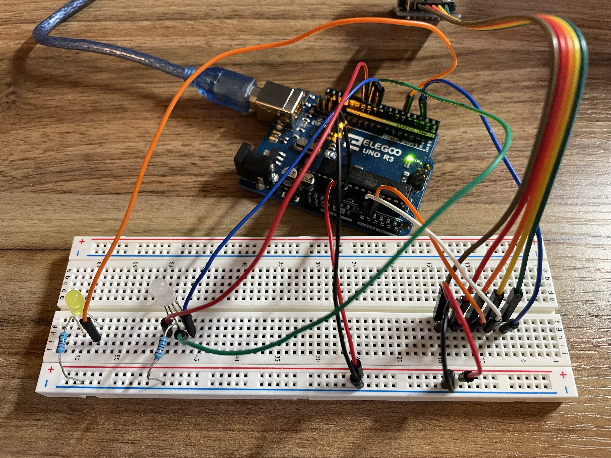
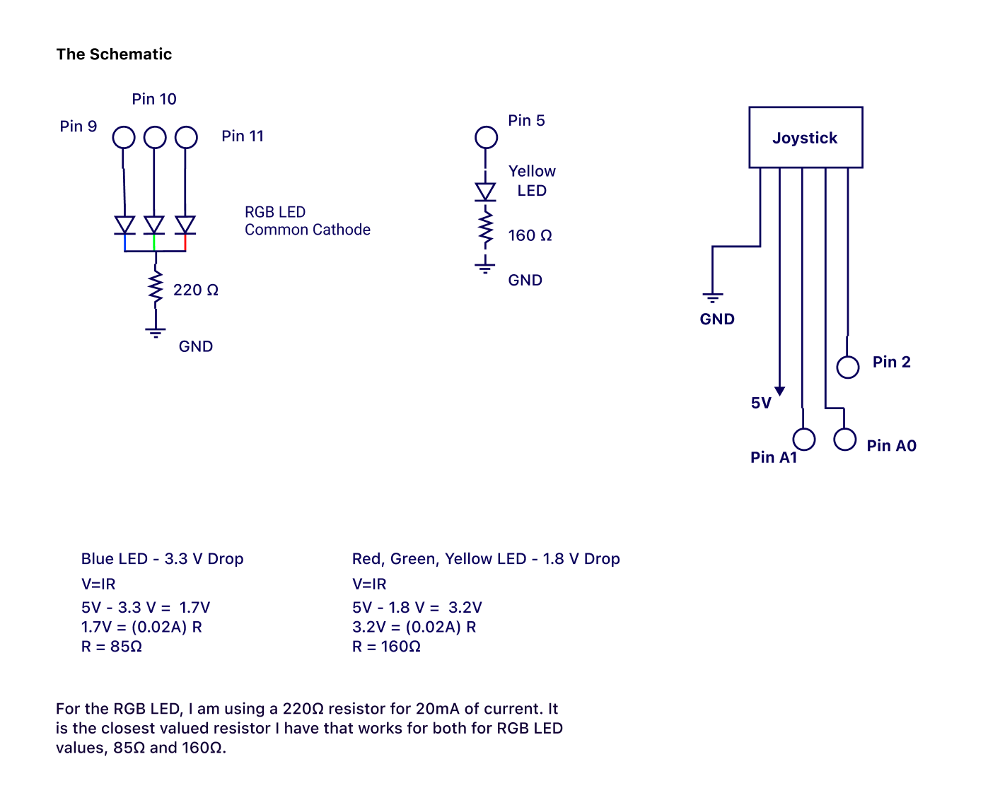
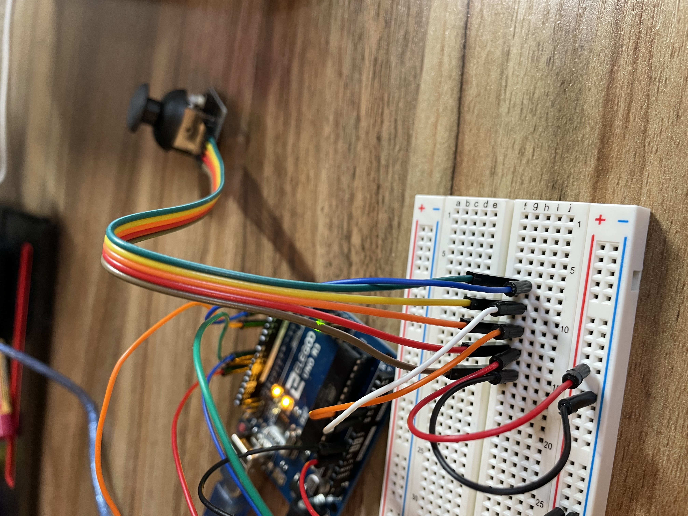

Talking to the Web

Assignment
For this assignment, I am communicating from my Arduino to the web, and from the web to my Arduino. For a joystick on my Arduino, I am controlling the movement of a wave visualization on the web. For the web, I will control the light behavior of the yellow and RGB LED.
The Schematic

Here is the schematic and calculations for my circuit.
Firmware
Select from the following tabs to view code snippets.
// Joystick to web commuication
// Arduino reading two inputs
// Sends to web as a printed array
int x = A0; // xvalue of joystick at A0 pin
int y = A1; // yvalue of joystick at A1 pin
int xval = 0; // initate xval
int yval = 0; // initate yval
void setup() {
Serial.begin(9600); // initiate serial at 9600 baud
Serial.setTimeout(10); // set the timeout for parseInt
}
void loop() {
xval = analogRead(x); // analog read pin A0
yval = analogRead(y); // analog read pin A1
Serial.print("["); // print to console
Serial.print(xval); // print to console
Serial.print(","); // print to console
Serial.print(yval); // print to console
Serial.println("]"); // print to console
}
// receives data from joystick
// changes direction of wave visualization
var serial; // variable to hold an instance of the serialport library
var portName = '/dev/tty.usbmodem11101' //rename to the name of your port
var dataarray = []; //some data coming in over serial!
let t = 0; // time variable
let red = 0; // red variable
let blue = 0; // blue variable
let green = 0; // green variable
function setup() {
serial = new p5.SerialPort(); // make a new instance of the serialport library
serial.on('list', printList); // set a callback function for the serialport list event
serial.on('connected', serverConnected); // callback for connecting to the server
serial.on('open', portOpen); // callback for the port opening
serial.on('data', serialEvent); // callback for when new data arrives
serial.on('error', serialError); // callback for errors
serial.on('close', portClose); // callback for the port closing
serial.list(); // list the serial ports
serial.open(portName); // open a serial port
createCanvas(1439, 804);
background(0x08, 0x16, 0x40);
noStroke();
fill(204, 204, 255);
}
// get the list of ports:
function printList(portList) {
// portList is an array of serial port names
for (var i = 0; i < portList.length; i++) {
// Display the list the console:
print(i + " " + portList[i]);
}
}
function serverConnected() {
print('connected to server.');
}
function portOpen() {
print('the serial port opened.')
}
function serialError(err) {
print('Something went wrong with the serial port. ' + err);
}
function portClose() {
print('The serial port closed.');
}
function serialEvent() {
if (serial.available()) {
var datastring = serial.readLine(); // readin some serial
var newarray;
try {
newarray = JSON.parse(datastring); // can we parse the serial
} catch(err) {
//console.log(err);
}
if (typeof(newarray) == 'object') {
dataarray = newarray;
}
console.log("got back " + datastring);
}
}
function draw() {
background(10, 10); // translucent background (creates trails)
// make a x and y grid of ellipses
for (let x = 0; x <= width; x = x + 30) {
for (let y = 0; y <= height; y = y + 30) {
// starting point of each circle depends on mouse position
const xAngle = map(dataarray[0], 0, width, -4 * PI, 4 * PI, true);
const yAngle = map(dataarray[1], 0, height, -4 * PI, 4 * PI, true);
// and also varies based on the particle's location
const angle = xAngle * (x / width) + yAngle * (y / height);
// each particle moves in a circle
const myX = x + 20 * cos(2 * PI * t + angle);
const myY = y + 20 * sin(2 * PI * t + angle);
ellipse(myX, myY, 10); // draw particle
}
}
t = t + 0.01; // update time
}
// Web to Arduino communication
// Reads from web input
// If user presses 'f', RGB LED fades through colors
// If user presses space bar, yellow LED is turned on/off
#include // add boolean library
const int R = 11; // add LED setup
const int G = 10; // add LED setup
const int B = 9; // add LED setup
const int Y = 5; // add LED setup
bool yellow = false; // initiate yellow boolean
bool fade = false; // initiate fade boolean
int red = 254; // initiate LED setup
int green = 1; // initiate LED setup
int blue = 127; // initiate LED setup
int rFade = 5; // initiate fade of red LED
int gFade = -5; // initiate fade of green LED
int bFade = 5; // initiate fade of blue LED
void setup() {
Serial.begin(9600); // initialize serial communications
Serial.setTimeout(10); // set the timeout for parseInt
pinMode(R, OUTPUT); // initialize the Red LED as output
pinMode(G, OUTPUT); // initialize the Green LED as output
pinMode(B, OUTPUT); // initialize the Blue LED as output
pinMode(Y, OUTPUT); // initialize the Blue LED as output
}
void loop() {
if (Serial.available() > 0) { // if there's serial data
int inByte = Serial.read(); // read it
Serial.write(inByte); // send it back out as raw binary data
if(inByte == 32){ // if space is pressed
yellow = !yellow; // switch yellow boolean value
} else if(inByte == 102){ // if 'f' is pressed
fade = !fade; // switch fade boolean value
}
}
if(yellow){ // if yellow is true
digitalWrite(Y, HIGH); // turn yellow LED on
} else {
digitalWrite(Y, LOW); // turn yellow LED off
}
if(fade){ // if fade is true
analogWrite(R, red); // analog write red LED value
analogWrite(G, green); // analog write green LED value
analogWrite(B, blue); // analog write blue LED value
red = red + rFade; // change the values of the LEDs
green = green + gFade; // change the values of the LEDs
blue = blue + bFade; // change the values of the LEDs
if (red >= 255 || red <= 0) { // if red is out of 0 to 255 range
rFade = rFade * -1; // set fade direction
}
if (green >= 255 || green <= 0) { // if green is out of 0 to 255 range
gFade = gFade * -1; // set fade direction
}
if (blue >= 255 || blue <= 0) { // if blue is out of 0 to 255 range
bFade = bFade * -1; // set fade direction
}
delay(30); // to see fade effect
} else {
analogWrite(R, 0); // set red to 0
analogWrite(G, 0); // set green to 0
analogWrite(B, 0); // set blue to 0
}
}
// sends web input to arduino
var serial; // variable to hold an instance of the serialport library
var portName = '/dev/tty.usbmodem11101' //rename to the name of your port
var dataarray = []; //some data coming in over serial!
function setup() {
serial = new p5.SerialPort(); // make a new instance of the serialport library
serial.on('list', printList); // set a callback function for the serialport list event
serial.on('connected', serverConnected); // callback for connecting to the server
serial.on('open', portOpen); // callback for the port opening
serial.on('data', serialEvent); // callback for when new data arrives
serial.on('error', serialError); // callback for errors
serial.on('close', portClose); // callback for the port closing
serial.list(); // list the serial ports
serial.open(portName); // open a serial port
}
// get the list of ports:
function printList(portList) {
// portList is an array of serial port names
for (var i = 0; i < portList.length; i++) {
// Display the list the console:
print(i + " " + portList[i]);
}
}
function serverConnected() {
print('connected to server.');
}
function portOpen() {
print('the serial port opened.')
}
function serialError(err) {
print('Something went wrong with the serial port. ' + err);
}
function portClose() {
print('The serial port closed.');
}
function serialEvent() {
if (serial.available()) {
inData = serial.read(); // read the data
console.log("got back " + inData); // console log the read data
}
}
function keyPressed() {
//console.log("writing key");
serial.write(key); // write key data to serial
}
function draw() {
text("inData: " + inData, 100, 400); // display this text in this specified area of the canvas
}
This is the code I used to develop the behavior I wanted. I am using analogWrite() to change the RGB LED behavior. See the comments in the code for further explanations.
My breadboard

Here is my breadboard with a joystick and two LEDs, one yellow LED and an RGB LED.

Here is my joystick connected to the Arduino.
Web communication!

Use the joystick to control the wave direction.

Press 'f' or the space bar to see some LED action.